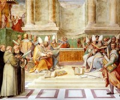

¿Sabías…? (La biblia)
La Biblia no contiene las palabras misa, eucaristía, purgatorio, limbo, trinidad, ni papa.
-
Hasta el siglo cuarto no había una selección de qué escritos formarían la Biblia.

“La selección de los evangelios canónicos se realizó en el concilio de Nicea (325) y fue ratificada en el de Laodicea (365). El Modus operandi para distinguir los textos verdaderos de los falsos fue, según la tradición, el de la “elección milagrosa”. Así, se han conservado cuatro versiones para justificar la preferencia por los cuatro libros canónicos: 1) después de que los obispos rezaran mucho, los cuatro textos volaron por sí solos hasta posarse sobre un altar; 2) se colocaron todos los evangelios en competición sobre el altar y los apócrifos cayeron al suelo mientras que los canónicos no se movieron; 3) elegidos los cuatro se pusieron sobre el altar y se conminó a Dios a que si había una sola palabra falsa en ellos cayesen al suelo, cosa que no sucedió con ninguno; y 4) penetró en el recinto de Nicea el Espíritu Santo, en forma de paloma, y posándose en el hombro de cada obispo les susurró qué evangelios eran los auténticos y cuáles los apócrifos (esta tradición evidenciaría, además, que una parte notable de los obispos presentes en el concilio eran sordos o muy descreídos, puesto que hubo una gran oposición a la elección – por votación mayoritaria que no unánime – de los cuatro textos canónicos actuales).”
—Mentiras fundamentales de la Iglesia Católica (Pág. 90-91)
Los Testigos de Jehová elaboraron una versión de la Biblia para que acordase mejor con sus puntos de doctrina. Esta se conoce como “Versión del Nuevo Mundo”.
El cuarto presidente de la Watch Tower (Testigos de Jehová), Frederick Williams Franz, fue parte del grupo selecto que elaboró la “Versión del Nuevo Mundo” y declaró en un estrado en 1954 que no sabía leer hebreo.
Acertadamente, William Shakespeare afirmó que la Biblia puede ser usada para defender cualquier idea.
En tiempos del Imperio Romano no se juraba colocando la mano sobre la Biblia, sino sobre los testículos.
La frase atribuida a Dios de “Ayúdate que yo te ayudaré”, que un 80% de personas piensan que está en la Biblia, realmente no lo está.
La Biblia es el libro más traducido del mundo (2454 lenguas), sólo seguido por el cuento de Pinocho de Carlo Collodi. La semejanza de ambos libros es la historia de Pinocho y Jonás que estuvieron en el vientre de un gran vertebrado marino, además de…
En Corea del Norte es ilegal poseer una Biblia.
Muchos de los monjes copistas que reproducían la Biblia, no sabía leer ni escribir, y que reproducían la Biblia por imitación de los caracteres.
-
La Biblia fue el primer libro impreso en la imprenta de tipos móviles Gutenberg, el 23 de febrero de 1455.
-
Durante el famoso debate de Oxford en 1860 sobre la Teoría de la evolución de Darwin, una Biblia fue levantada por el capitán Robert Fitz Roy (quien comandó el Beagle) y pidió a los aistentes “creer a Dios antes que a los hombres”.
En la Biblia se registra en total que Jehová mató 2.270.365 personas, mientras del diablo solo se registran 10 asesinatos.
La Iglesia Católica llevó a la hoguera en octubre de 1536 a William Tyndale por traducir la Biblia al inglés.
Basándose en la Biblia los presbiterianos de Carolina del Sur afirmaron en 1835 que la esclavitud estaba lejos de ser un pecado a los ojos de Dios, ya que en ningún versículo de la Biblia se condenaba, además de existir textos que reglamentaban la esclavitud y pedían la obediencia de los esclavos a sus amos. Por este motivo se separaron las iglesias presbiterianas, metodistas, bautistas y episcopales antes de la Guerra Civil, en abolicionistas y esclavistas.
-
La Biblia narra eventos históricos desde el reinó de Judá, en el siglo X AEC. Los relatos anteriores, como la historia de Moisés, el éxodo y los patriarcas anteriores no tienen sustento arqueológico, ni histórico y parecen ser inventos.
-
Todas, y cada una las denominaciones cristianas (22.190 en 1985) afirman ser las correctas interpretadoras de las enseñanzas bíblicas.
-
El matemático y escéptico David Thomas, para refutar la idea de que la Biblia contiene un código secreto encontró en el libro “El código secreto de la Biblia” de Michael Drosnin el mensaje oculto: “El Código de la Biblia es un fraude y un engaño para tontos”.
La división de la Biblia en capítulos se debe al clérigo inglés Esteban Langton en 1220, y la división en versículos a Santos Pagnino (católico) y a Roberto Stefano (protestante) en 1528 y 1551, respectivamente.
Las Biblias católicas y protestantes no son iguales? La Biblia católica contiene 7 libros de más (Libro de Tobías, Judith, 1° Macabeos, 2° Macabeos, Sabiduría, Eclesiástico y Baruc). Además las Biblias de la Iglesia Siriaca Nestoriana posee un libro adicional (Apocalipsis de Baruc), al igual que la de los antiguos cristianos coptos de Etiopía (Sirácida, Libro de Enoc y de los jubileos), y la Iglesia ortodoxa de Etiopía (Libro de Enoc y los Jubileos, además de un tercer libro de Macabeos).
-
La historia de que una Biblia salva a una persona al detener una bala es muy corriente. Por lo menos la prensa mexicana registra un caso en 1998 en el que en Matamoros, Luz Alpuche Mendoza, Antonia Espinoza y Patricia Guzmán se encontraron en medio de una balacera, y una bala que se les acercaba dio contra la Biblia que llevaban.
Los adventistas consideran que el hecho de que en un trance de 1845 la señora White haya sostenido una Biblia de 18 libras por varios minutos como un milagro, mientras que los escépticos atribuyen su fuerza a un episodio epiléptico.
Los tefilin son envoltorios o cajitas de cuero que contienen porciones de la Biblia (más concretamente, de la Torá, que contiene los primeros cinco libros llamados Pentateuco en la Biblia cristiana) y que son sujetadas con tiras de cuero, una al brazo contrario a la mano hábil y la otra a la frente de los judíos ortodoxos.
Se llama “Biblia del Diablo” o Codex Gigas a un gran manuscrito del siglo XIII de Bohemia, una de las históricas tierras checas. Esta obra se distingue por su tamaño y su sorprendente página completa sobre la interpretación del diablo (en la página 577), contiene las siguientes partes: el Antiguo y Nuevo Testamento, dos obras de Flavio Josefo, Etimologías de Isidoro de Sevilla, el libro de texto estándar para la enseñanza de la medicina en la Edad Media conocido como Ars medicinae (El arte de la medicina), Chronica Boëmorum (Crónica de los bohemios) del siglo XII de Cosmas de Praga y un calendario. De especial interés son las secciones que dan testimonio del origen de Bohemia del manuscrito y su agitada historia. A fines del siglo XVI, el Codex se incorporó a las colecciones del gobernante Habsburgo, Rudolph II. Durante el asedio sueco de Praga a finales de la Guerra de los Treinta Años (1648), el manuscrito fue tomado como botín de guerra y trasladado a Estocolmo.
La Biblia más antigua es un libro conocido como el Codex Sinaiticus; es un manuscrito del siglo IV hallado en el monasterio de Santa Catalina, cerca del monte Sinaí. Curiosamente esta obra incluye los libros de la Epístola de Bernabé y fragmentos del Pastor de Hermas, libros hoy considerados apócrifos. Es notable también el hecho que algunos pasajes que en las biblias modernas indican que Jesús es dios no hacen esta afirmación en el Codex Sinaiticus.
La Biblia fue escrita en tres lenguas: hebreo, griego y arameo.
En el Pentateuco original, escrito en el siglo VIII AEC. no encontramos una afirmación claramente monoteísta, pero en la época que se escribió el Deuteronomio, más o menos un siglo más tarde, el Deuteronomista hace que Josué amenace a los israelitas con el aniquilamiento total en caso que no volverse monoteístas.
La escritura de las obras que hoy conforman la Biblia se inició en el siglo VIII AEC y duró hasta el año 120 EC.
Volver a la sección Examinando las religiones
Comentarios
Comments powered by Disqus